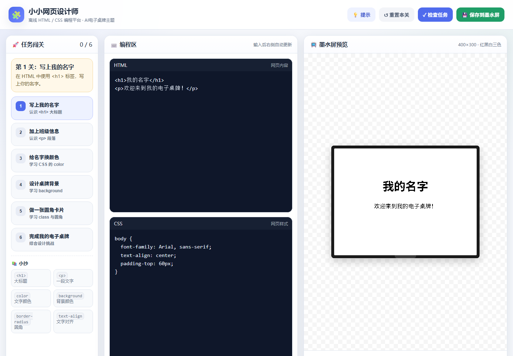

这个应用会把设备变成一个 Wi-Fi 热点，并在设备上运行一个微型网页服务器。手机或电脑连上热点后，用浏览器打开「小小网页设计师」，就能在 6 个 HTML/CSS 关卡里边学边做，最后把 400×300 的红黑白电子桌牌保存到墨水屏。
整个使用过程不需要联网、不需要安装 App、不需要账号。页面由设备直接提供，手机只负责编辑和预览。
快速开始：安装「必装驱动」和本应用 → 设为默认应用或从设备应用管理器启动 → 连接设备热点 → 浏览器打开 http://192.168.4.1/ → 编辑并点击「保存到墨水屏」。
功能简介
- 设备热点 + 本地网页：设备启动后创建 Wi-Fi 热点，并运行 HTTP 服务器，不依赖外网。
- 6 关 HTML/CSS 闯关：从
<h1>、<p>到颜色、背景和圆角卡片，边改边看。 - 400×300 墨水屏预览：右侧按红、黑、白三色模拟最终显示效果。
- 一键保存到墨水屏：把预览转换成黑白/红色位图，上传到设备并立即刷新。
- 离线可用：页面、编辑器和任务都在设备里，手机连上设备热点即可使用。
使用条件
- 已正确安装并能启动本应用的设备：ESP32-S3 开发板 + 4.2 英寸 400×300 红黑白墨水屏（GDEY042Z98 / SSD1683，与本项目驱动匹配）。本项目按 ESP32-S3 验证，带
network模块的同类开发板可自行适配。 - 应用中心已安装必装驱动。
web.py通过from driver import epd4in2b调用屏幕驱动，缺少它时网页仍能打开，但启动屏和保存后的刷新不会生效。 - 手机或电脑支持 2.4GHz Wi-Fi，并使用较新的浏览器；建议使用 Chrome 或 Edge，Safari 等现代浏览器也可以尝试，保存功能以实际测试为准。
- 设备供电稳定。墨水屏整屏刷新需要几秒到十几秒，刷新期间不要断电。
- 设备端能正常运行本应用，串口日志没有持续报错。
安装与启动
- 在应用中心的「应用」视图先安装必装驱动，再找到「墨水屏网页制作WIFI版」并点击安装。
- 安装完成后，点击应用卡片上的星标，把它设为默认应用；设备重启后会自动进入本应用。也可以不设默认，直接在设备端的「应用管理器」里选择它并确认启动。
- 设备启动后会创建 Wi-Fi 热点，并在墨水屏上显示热点名称、密码和 IP 地址。
- 手机或电脑连接该热点。设备检测到客户端连接后，才会启动网页服务；连接后等几秒再打开浏览器。
- 浏览器访问
http://192.168.4.1/，进入「小小网页设计师」。
注意：请通过 http://192.168.4.1/ 打开页面，不要直接双击电脑里的 index.html；否则「保存到墨水屏」找不到设备。
默认热点信息
| 项目 | 默认值 | 说明 |
|---|---|---|
| 热点名称 | MP-AP-XXXXXX | MP-AP- + 芯片唯一 ID 后 3 字节（ESP32 上即 MAC 后 6 位）；以墨水屏显示为准 |
| 热点密码 | 12345678 | 可在应用的 web.py 中修改 |
| 网页地址 | http://192.168.4.1/ | 默认端口 80，不要用 https，也不用加端口号 |
| 启动屏内容 | SSID / PWD / IP | 设备启动时先把这些信息显示到墨水屏 |
如果手机提示「此 WLAN 无法访问互联网」，选择保持连接或仍然连接。这个热点只用于访问设备，本身不提供外网。
安全提示：默认密码 12345678 只适合临时使用。同一热点下的设备都可以访问这个网页，建议把 AP_PASSWORD 改成至少 8 位的密码。
可选：STA 模式（连接路由器）
默认的 AP 模式最简单，不需要路由器。如果你希望设备连接家里的 Wi-Fi，可以使用 STA 模式：在墨水屏显示热点信息、手机还没有连接时，按开发板上的 BOOT 键（GPIO0），设备会尝试切换。
当前代码中的 STA 账号是示例值 XMU / 12345678。使用前请打开应用目录下的 web.py（源码对应 app/web/web.py），修改 _switch_to_sta() 里的 STA_SSID 和 STA_PASSWORD，保存到设备后重启。
连接成功后，墨水屏会显示 WiFi STA Mode 和新的 IP 地址；手机或电脑连接同一个路由器，再访问 http://新IP/。如果连接失败，AP 热点已经在切换时关闭，网页会无法访问，重启设备即可恢复 AP 模式。
提示：BOOT 键只在「等待手机连接」阶段生效；网页服务已经启动后再按，不会切换模式。不熟悉代码修改时，建议一直使用默认的 AP 模式。
网页界面
打开页面后，标题是「小小网页设计师」。页面分为三栏，窄屏时会自动上下排列：
| 区域 | 作用 |
|---|---|
| 左侧「任务闯关」 | 查看当前关卡、任务说明、提示和小抄；点击关卡可以切换。 |
| 中间「编程区」 | 上面写 HTML，下面写 CSS；输入时右侧自动更新，按 Tab 会插入两个空格。 |
| 右侧「墨水屏预览」 | 400×300 红黑白预览，底部显示状态提示和完成进度。 |

上图：桌面浏览器中的三栏布局。当前是第 1 关，右侧预览按 400×300 显示；窗口变窄时预览区会移到下方，手机上三栏上下排列。
顶部按钮
| 按钮 | 作用 |
|---|---|
| 提示 | 显示当前关卡的知识点和示例代码。 |
| 重置本关 | 把当前关卡的 HTML/CSS 恢复为初始模板，操作前会弹窗确认。 |
| 检查任务 | 检查当前关卡是否完成；完成后弹窗提示，可以继续修改或进入下一关。 |
| 保存到墨水屏 | 把右侧预览转换成红黑白图像，上传到设备并刷新屏幕。 |
6 个关卡
| 关卡 | 学习内容 | 任务 |
|---|---|---|
| 1. 写上我的名字 | <h1> | 用大标题写上自己的名字 |
| 2. 加上班级信息 | <p> | 在名字下面增加班级段落 |
| 3. 给名字换颜色 | CSS color | 给 h1 设置文字颜色 |
| 4. 设计桌牌背景 | background / background-color | 给页面或卡片增加背景 |
| 5. 做一张圆角卡片 | class + border-radius | 给 .card 增加圆角 |
| 6. 完成我的电子桌牌 | 综合运用 | 同时使用 color、background 和 border-radius 完成作品 |
完成记录会保存在当前浏览器里，换浏览器、清除站点数据或换设备访问时，进度可能不同。点击其他关卡会载入该关卡的初始模板，当前编辑区里未备份的修改会被替换；想保留代码请先复制到电脑。
刷新页面后会回到第 1 关的模板。编辑区的代码不会写回设备，也不会上传到设备文件系统；「保存到墨水屏」保存的是渲染后的图片，不是 HTML/CSS 源文件。
保存到墨水屏
- 在右侧预览里确认排版和颜色。预览画布固定为 400×300。
- 点击顶部「保存到墨水屏」。
- 页面会把预览渲染成 400×300 图像，再按红、黑、白三色转换成两个 1 位位图，共 30000 字节，上传到设备的
/save.img。 - 设备把数据保存为
preview.img，然后驱动墨水屏整屏刷新。 - 页面显示「已保存到墨水屏」后，仍以屏幕是否实际刷新为准；整屏刷新需要几秒到十几秒，期间不要断电或关闭设备。
只保存画面：保存操作不会修改设备里的 web/index.html，也不会把 HTML/CSS 写回设备。下次打开网页仍是关卡模板，需要保留代码请自行复制。
启动屏会覆盖画面：应用重新启动时，会先把 Wi-Fi 热点信息写入 preview.img 并显示；之前保存的设计图会被启动屏替换。需要时重新打开网页保存一次即可。
如果页面提示「截图失败」，通常是 HTML 里引用了无法访问的外部图片、在线字体或复杂资源。先改用纯 CSS、系统字体和内联内容再试。
编写建议
- 按 400×300 设计。预览里已经固定了画布尺寸，页面内容不要超出这个范围，建议给
html, body设置margin: 0和overflow: hidden。 - 优先使用纯黑、纯白、纯红（例如
#000000、#ffffff、#ff0000）和高对比度色块。灰色、渐变、照片和很细的线条在三色化后可能变成黑块或直接消失。 - 颜色会按「红 / 黑 / 白」三色化：偏红且足够鲜艳的颜色进入红色通道，偏暗的进入黑色，其余为白色。以最终屏幕效果为准。
- AP 模式下手机没有外网，外部图片、在线字体和 CDN 资源可能加载失败。建议使用系统字体、emoji、纯 CSS 图形和内联样式。
- 手机屏幕较窄时，预览区可能需要横向滚动；条件允许时用电脑编辑更顺手。
- 设备一次只处理一个网页请求。保存时不要同时刷新多个页面或上传大文件，等当前操作完成后再继续。
源码与自定义
应用安装到设备后位于 /web 目录，和网页相关的只有两个文件：
| 文件 | 作用 |
|---|---|
web.py | 创建 Wi-Fi 热点（或连接路由器）、运行 HTTP 服务器、绘制启动屏、接收 /save.img 并刷新墨水屏。 |
index.html | 「小小网页设计师」的全部页面：关卡数据、HTML/CSS 编辑器、400×300 预览和三色化上传。 |
屏幕驱动不在此目录中：web.py 使用 from driver import epd4in2b，读取的是「必装驱动」写入的 /driver/epd4in2b.py。
可修改的常量
| 常量 | 默认值 | 说明 |
|---|---|---|
AP_SSID_PREFIX | MP-AP | 热点名称前缀，后面自动追加芯片 ID 后缀 |
AP_PASSWORD | 12345678 | 热点密码，至少 8 位 |
AP_IP | 192.168.4.1 | 热点网关地址，改后访问地址同步变化 |
PORT | 80 | HTTP 端口；改成其它端口后访问时要带端口号 |
INDEX_FILE | web/index.html | 访问 / 时返回的首页 |
STA 模式的账号密码写在 _switch_to_sta() 里的 STA_SSID / STA_PASSWORD。这些常量只在应用启动时读取一次，修改后需要重启应用。
改关卡或换成自己的页面
- 6 个关卡都在
index.html的levels数组里，每项包含title、brief、mission、hint、html、css和check；check(html, css)返回true表示过关。 - 增删关卡时同步修改数组即可，不需要改
web.py。完成记录按关卡序号保存在浏览器里，调整顺序后旧记录可能对不上。 - 想换成自己的网页：直接用新页面替换
web/index.html，或修改INDEX_FILE指向别的文件；页面放在/web目录下，用相对路径引用同目录资源即可。 - HTTP 服务会把
/xxx映射到设备上的web/xxx，例如http://192.168.4.1/logo.png读取web/logo.png；带..的路径会被拒绝。响应带Cache-Control: no-store，改完文件刷新页面就能看到。
常见问题
手机搜不到 MP-AP-... 热点
确认应用已经启动，墨水屏上显示了热点名称和密码；设备使用 2.4GHz Wi-Fi。若仍然搜不到，重启设备；如果之前按过 BOOT，可能已经切换到 STA 模式，检查屏幕显示的是热点信息还是 IP 信息。
连上热点后打不开 192.168.4.1
- 设备要等手机连上热点后才启动网页服务，连接后等 3~5 秒再刷新。
- 地址必须是
http://192.168.4.1/，不要用https，也不要加端口号。 - 手机提示「无法上网」时选择保持连接；必要时暂时关闭移动数据，避免浏览器把请求走蜂窝网络。
- 如果之前切换到了 STA 模式，设备会使用路由器分配的 IP；以墨水屏显示的地址为准，重启可恢复 AP 模式。
点击「保存到墨水屏」失败或屏幕没有变化
- 确认浏览器地址是
http://192.168.4.1/，不是本地文件或其他网页。 - 确认手机仍连接设备热点，设备没有断电或重启。
- 等待当前上传结束再重试；设备一次只能处理一个请求。
- 页面提示成功但屏幕不动时，先等整屏刷新；仍不动可以查看设备串口日志中的
FAIL...信息，再重新保存。 - 如果状态显示「截图失败」，先移除外部图片、在线字体等无法离线加载的资源。
提示保存成功，但墨水屏画面没变
多数是缺少屏幕驱动：确认应用中心已安装必装驱动，设备上存在 /driver/epd4in2b.py。应用只在启动和保存成功时调用驱动，驱动缺失时网页功能正常，串口会打印「墨水屏刷新失败」。另外整屏刷新需要几秒到十几秒，保存后先等一会儿再判断。
屏幕颜色和预览不一样
墨水屏只有红、黑、白三色，预览只是近似模拟。纯红、纯黑、纯白最稳定；浅色可能变白，深色可能变黑，渐变和照片会被二值化。以实际屏幕为准，必要时降低配色复杂度。
刷新页面或切换关卡后代码没了？
刷新页面会回到第 1 关模板；切换关卡会载入目标关卡的模板，当前编辑内容会被替换。完成记录保存在当前浏览器的本地存储中，清除站点数据会丢失。重要代码请复制到电脑保存。
重启后之前保存的画面还在吗
墨水屏断电后会保留最后显示的画面；但应用重新启动时会先显示 Wi-Fi 热点启动屏，并把启动屏写入 preview.img，之前保存的设计图会被替换。需要时重新打开网页保存一次。
怎么修改热点名称和密码
打开应用目录下的 web.py，修改 AP_SSID_PREFIX（热点前缀）和 AP_PASSWORD（至少 8 位），保存到设备后重启（或在文件视图保存后点状态栏「软复位」）。热点名称后面会自动追加芯片 ID 后缀，实际名称以墨水屏显示为准；完整的可修改常量见上面的「源码与自定义」。
怎么退出这个应用
网页端没有「退出」按钮，应用会持续运行 HTTP 服务。重启设备可以结束当前运行；如果它被设为默认应用，开机时按住 GPIO39 或 GPIO40（下键或上键）可以跳过默认应用，进入设备端的应用管理器。
技术参数
| 项目 | 值 |
|---|---|
| 屏幕 | 4.2 英寸，400×300，黑/白/红三色（GDEY042Z98 / SSD1683） |
| 默认热点 | MP-AP-XXXXXX，密码 12345678，IP 192.168.4.1 |
| HTTP | 端口 80；静态文件用 GET 提供，保存图像用 POST /save.img |
| 保存数据 | 30000 字节 = 15000 字节黑色位图 + 15000 字节红色位图（1 位/像素） |
| 保存文件 | preview.img |
| 屏幕驱动 | driver/epd4in2b.py，随「必装驱动」安装 |
| 网页入口 | web/index.html |
| STA 示例 | XMU / 12345678（需在 web.py 中修改） |